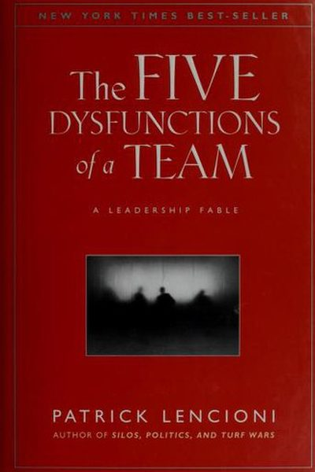

Library › Business & Startups
The Five Dysfunctions of a Team — Summary & Key Lessons

A leadership fable about the team killers: absence of trust, fear of conflict, lack of commitment, avoidance of accountability, and inattention to results.
📖 OPEN THE FULL INTERACTIVE BREAKDOWN →🌐 Read it in Hindi, Hinglish, Gujarati, Tamil & 22 more languages — free, with audio.
💡 The Big Idea
Lencioni's pyramid: 1) Absence of trust (hiding weaknesses) → 2) Fear of conflict (fake harmony) → 3) Lack of commitment (ambiguity) → 4) Avoidance of accountability (missed standards) → 5) Inattention to results (ego over team). Each layer feeds the next. The fix is to build the pyramid from the bottom: vulnerability-based trust first, then productive conflict, then real commitment, then peer accountability, then shared results.
🧠 The 6 Key Lessons
Lesson 1: Dysfunction 1: Absence of Trust
The Pyramid
Teams without trust hide their weaknesses, mistakes and needs — because vulnerability feels dangerous. Trust here doesn't mean 'we're friends'; it means 'I can be genuinely vulnerable with you without being punished'. Without it, every other dysfunction follows.
📖 Example: Lencioni's fable: a new CEO asks her executives to reveal their weaknesses and biggest mistakes in a leadership session — awkward at first, it unlocks the team because everyone sees the human first. Read the full example →
⚡ Do this: In your next team meeting, go first: share one real weakness or mistake of yours, specifically. Model the vulnerability you want back.
Lesson 2: Dysfunction 2: Fear of Conflict
The Pyramid
When trust is missing, teams avoid debate — meetings become polite theater and decisions get made in hallways. Great teams have passionate, unfiltered conflict about IDEAS (not people), because they know it produces the best answer. Silence isn't harmony; it's resentment storing up.
📖 Example: The fable's CEO starts demanding real debate; her executives, used to nodding, initially flounder — then discover that arguing about the plan makes the plan better and the team tighter. Read the full example →
⚡ Do this: In your next discussion, deliberately disagree with one idea — with data, not drama. Watch whether the conversation gets better.
Lesson 3: Dysfunction 3: Lack of Commitment
The Pyramid
Without honest debate, people don't commit — they comply silently and then 'wait and see'. Commitment comes from clarity: even people who disagreed must leave the room saying 'I support this'. The test: ambiguity is the enemy; explicit decisions with named owners beat vague agreements.
📖 Example: Lencioni's teams learn to close every decision with the question: 'So what exactly are we committing to, and who owns what by when?' Without that, the decision evaporates by Monday. Read the full example →
⚡ Do this: End your next meeting with: 'What did we decide, who does what, by when?' Write it down and share it.
Lesson 4: Dysfunction 4: Avoidance of Accountability
The Pyramid
When commitment is fuzzy, nobody holds anyone accountable — because 'I didn't agree to that anyway'. Teams with real commitment hold each other to standards, peer-to-peer, without waiting for the boss. Avoiding the hard conversation about a missed standard is an act of disrespect to the team.
📖 Example: The fable's team starts calling out missed deadlines in meetings — uncomfortable at first, then liberating, because standards become real and mediocrity stops being tolerated. Read the full example →
⚡ Do this: Next time a teammate misses a commitment, have the conversation directly and kindly — with the standard, not the person, as the focus.
Lesson 5: Dysfunction 5: Inattention to Results
The Pyramid
The final dysfunction: team members care more about their own ego, status or department than the team's shared outcome. The fix is making the collective result — the one number, the shared goal — so visible and so rewarded that personal agendas shrink. Ego is the last thing a team kills.
📖 Example: Lencioni's teams adopt a single, public scoreboard for the team's real goal; every meeting starts with it. When everyone can see whether the team is winning, 'my department' complaints fade. Read the full example →
⚡ Do this: Write your team's ONE shared result and put it somewhere visible. Start every meeting with it. See what it does to the conversation.
Lesson 6: Trust Is the Foundation — Without It, Everything Cracks
The Model
Lencioni's pyramid: absence of trust leads to fear of conflict, which leads to lack of commitment, which leads to avoidance of accountability, which leads to inattention to results. Every level of dysfunction traces back to the first — teammates who won't be vulnerable with each other. Building trust is not a team-building exercise; it is the foundation of everything else.
📖 Example: Teams that avoid honest conflict make decisions nobody fully supports, then quietly fail to execute; teams that trust each other argue hard and commit fully. Lencioni's model predicts which meetings produce real alignment and which produce polite sabotage. Read the full example →
⚡ Do this: In your next team discussion, be the first to admit a genuine mistake or uncertainty — and watch whether others follow.
✅ 5-Step Action Plan
- Share one real weakness in your next meeting — go first.
- Have one productive disagreement with data, not drama.
- Close every meeting with decisions, owners and dates.
- Have one direct accountability conversation this week.
- Put the team's one result on a public scoreboard.
⚠️ When This Doesn't Work
Lencioni's 'trust, conflict, commitment' pyramid is the most practical team book ever — and Lehman is the reminder that a team can clear all five dysfunctions and still fail: Lehman's executives trusted each other completely, fought openly, committed fully, and held each other accountable — to the wrong strategy. Their cohesion was total; their judgement was the problem. The sixth dysfunction the book never names: a team that is beautifully aligned behind a catastrophic plan. Cohesion is not wisdom. The most dangerous teams are not the dysfunctional ones — they are the functional ones that nobody questions because they function so well.
💀 The Graveyard Proves It
🏛️ Lehman Brothers — 158 Years Old, Leveraged 31:1, Dead in a Weekend. Burn: $600B+ — largest bankruptcy ever. Read the full case study →
💬 Best Quotes from The Five Dysfunctions of a Team
- “Not finance. Not strategy. Not technology. It is teamwork that remains the ultimate competitive advantage.”
- “If you could get all the people in an organization rowing in the same direction, you could dominate any industry.”
- “Great teams trust each other enough to have unfiltered conflict.”
Interactive version: mark lessons as read, listen in your language, share quote cards.